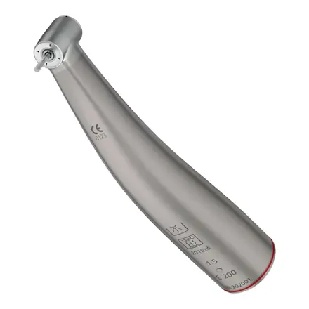
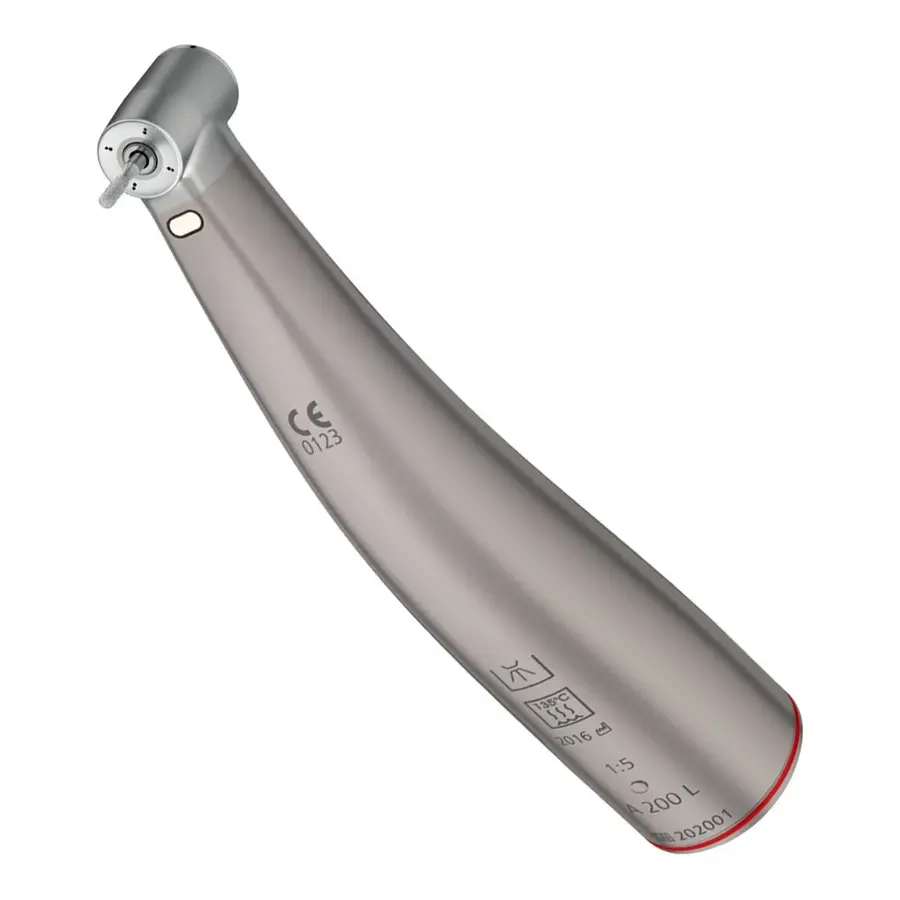
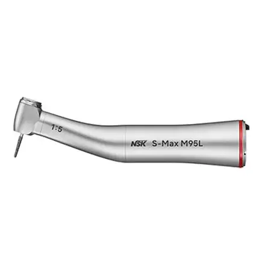
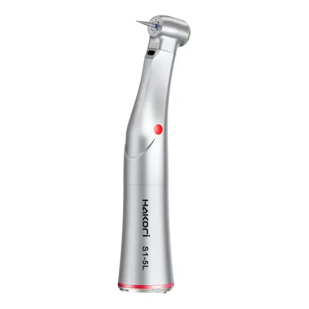
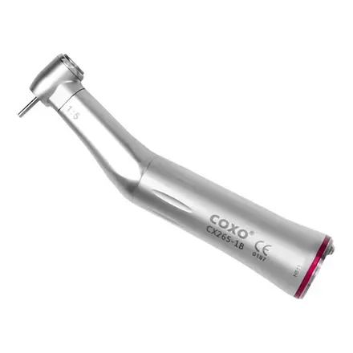

24 000 ₽в лизинг от 800 ₽/мес

Повышающие
Инструменты Sirona Comfort: совершенство в каждой детали
Инструменты Sirona Comfort — это результат инновационных разработок и передовых технологий, направленных на обеспечение максимального удобства и надежности для профессиональных стоматологов. Высокотехнологичный титановый корпус, эргономичный дизайн, долговечность и простота в использовании делают эти инструменты идеальным выбором для тех, кто стремится к высокому качеству работы и заботится о комфорте своих пациентов.
1. Исключительная эргономика для продолжительной работы без усталости
Одной из главных задач при создании инструментов Sirona Comfort было обеспечение максимального удобства пользователя. Инструменты этой серии имеют продуманную форму и легкий титановый корпус, который идеально ложится в руку, снижая нагрузку на кисть и запястье. Благодаря сбалансированному весу и удобному хвату специалисты могут работать с высокой точностью даже при длительных процедурах, не чувствуя дискомфорта или усталости.
2. Легкость и прочность титанового корпуса
Титан — это материал, который превосходит другие по многим параметрам. Легкость корпуса уменьшает нагрузку на руку, а его высокая прочность обеспечивает устойчивость к механическим повреждениям. Инструменты Sirona Comfort служат значительно дольше, сохраняя свою функциональность даже при ежедневной интенсивной эксплуатации.
3. Уникальные тактильные свойства титана
Помимо легкости и прочности, титан обладает термонейтральными свойствами. Это означает, что инструмент не нагревается и не охлаждается, оставаясь комфортным для пользователя в любых условиях. Поверхность корпуса приятно ощущается на ощупь и не скользит, что важно для уверенного захвата и удобной работы.
4. Современная система освещения для максимальной точности
Подсветка, интегрированная в угловой наконечник, обеспечивает равномерное освещение рабочей зоны. Это позволяет улучшить видимость, особенно в труднодоступных областях, и значительно повысить точность манипуляций. Благодаря стерилизуемому световоду система освещения остается надежной и долговечной.
5. Гигиеничность на высшем уровне
В современных стоматологических клиниках гигиена имеет первостепенное значение. Инструменты Sirona Comfort легко очищаются благодаря гладкой поверхности корпуса. Их можно стерилизовать и дезинфицировать при высоких температурах, что обеспечивает соответствие всем санитарным требованиям и стандартам. Такой подход гарантирует безопасность пациентов и удобство специалистов.
6. Устойчивость к износу и долговечность
Инструменты Sirona Comfort рассчитаны на многолетнюю эксплуатацию. Использование долговечных подшипников и качественных материалов обеспечивает надежность и стабильность работы на протяжении всего срока службы. Даже при интенсивной эксплуатации эти инструменты сохраняют свои характеристики, оправдывая вложенные средства.
7. Универсальность благодаря ISO-интерфейсу
Инструменты серии Sirona Comfort совместимы с большинством современных микромоторов. Это делает их универсальными для различных клиник и позволяет интегрировать их в любую существующую систему. Специалисты могут быть уверены, что эти инструменты будут работать с их оборудованием без каких-либо проблем.
Немецкое качество и надежность.
Производство инструментов Sirona Comfort осуществляется в Германии, что является гарантией их высочайшего качества. Немецкие инженеры славятся своей точностью и вниманием к деталям, что делает продукцию Sirona одной из лучших на рынке.
Идеальный баланс цены и качества.
Несмотря на премиальные характеристики, инструменты Sirona Comfort имеют конкурентоспособную стоимость. Они позволяют значительно повысить эффективность работы, снизить затраты на обслуживание и обеспечить комфортные условия для специалистов.
Рекомендации профессионалов.
Инструменты Sirona Comfort высоко оценены стоматологами по всему миру. Специалисты отмечают удобство, долговечность и универсальность этих инструментов, благодаря чему они становятся незаменимыми в ежедневной практике.
Инструменты Sirona Comfort — это не просто рабочие инструменты, а ваш надежный партнер в стоматологической практике. Легкость, удобство, долговечность и универсальность делают их идеальными для любых задач. Инновационные решения, такие как титановый корпус и встроенная подсветка, позволяют достичь новых высот в профессиональной деятельности. Выберите Sirona Comfort — и убедитесь, как комфорт и надежность могут изменить вашу работу к лучшему!
Нажмите «Получить КП»: пришлём коммерческое предложение с ценой, сроком поставки и условиями. Или счёт, если цена на сайте вас устраивает.
По счёту для юрлица или в лизинг. Оплаты картой на сайте нет.
Привезём, смонтируем и запустим. Город и сроки уточняются.


Хит


Адрес на сайте: /catalog/povyshayushchie-nakonechniki/povyshayushchiy-uglovoy-nakonechnik-sirona-t2-line-a-200-l/